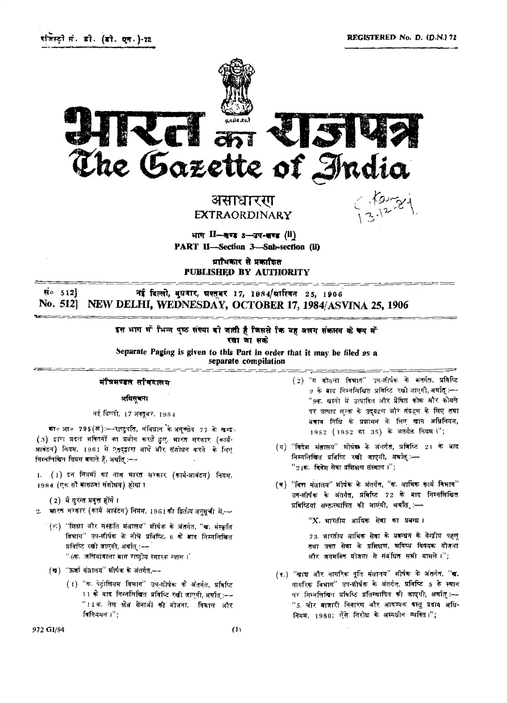
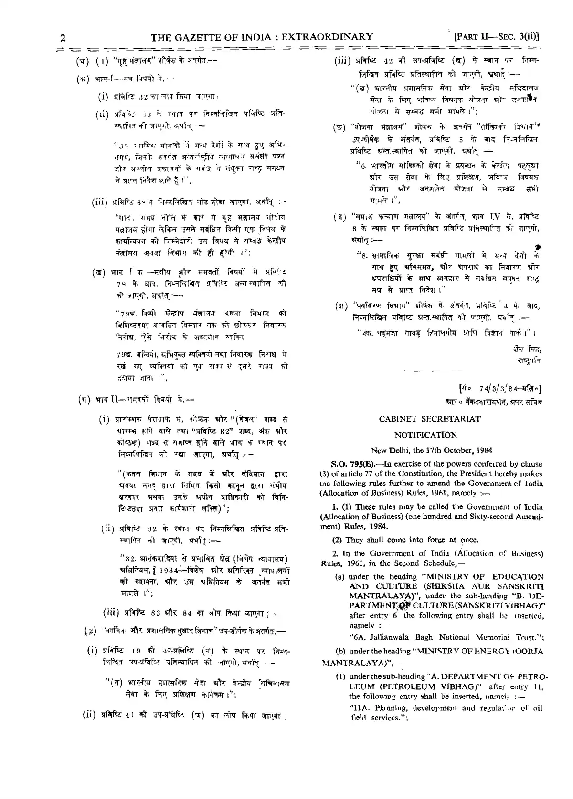
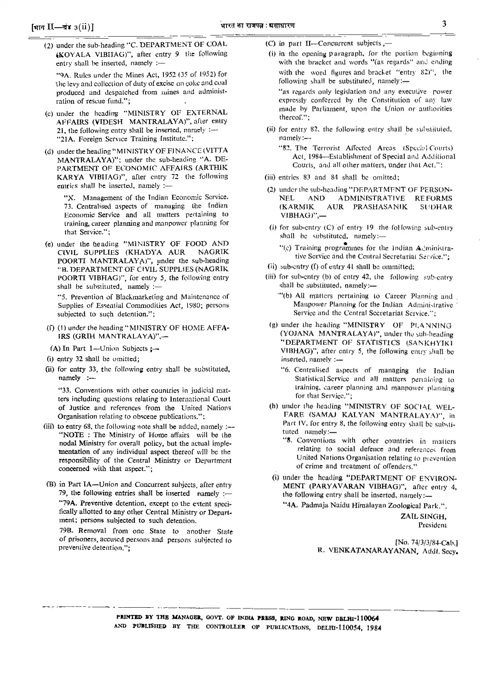

Amendment #162 (S.O. 795(E), 1984)
19 changes: 0 to the First Schedule, 19 to the Second Schedule. 10 applied9 not applied
The order, page by page
Page 1 of 4

Page 2 of 4

12after Schedule 2 › MINISTRY OF EDUCATION AND CULTURE › DEPARTMENT OF CULTURE › entry 6
- 6A. Jallianwala Bagh National Memorial Trust.
applied at schedule 2 › ministry MINISTRY OF EDUCATION AND CULTURE (SHIKSHA AUR SANSKRITI MANTRA- LAYA) › department B › entry 6A in the Rules after #162
after Schedule 2 › MINISTRY OF ENERGY › DEPARTMENT OF PETROLEUM › entry 11
- 11A. Planning, development and regulatior of oilfield services.
applied at schedule 2 › ministry MINISTRY OF ENERGY (OORJA MAN- TRALAYA). › department A › entry 11A in the Rules after #162
Page 3 of 4

345678910111213141516171819after Schedule 2 › MINISTRY OF ENERGY › DEPARTMENT OF COAL › entry 9
- OA. Rules under the Mines Act, 1952 (35 of 1952) for the levy and collection of duty of excise on coke and coal produced and despatched from mines and administration of rescue fund.
applied at schedule 2 › ministry MINISTRY OF ENERGY (OORJA MAN- TRALAYA). › department C › group_heading OA in the Rules after #162
after Schedule 2 › MINISTRY OF EXTERNAL AFFAIRS › entry 21
- 21A. Foreign Service Training Institute.
applied at schedule 2 › ministry MINISTRY OF EXTERNAL AFFAIRS › entry 21A in the Rules after #162
after Schedule 2 › MINISTRY OF FINANCE › DEPARTMENT OF ECONOMIC AFFAIRS › entry 72
- X. Management of the Indian Economic Service.
- 73. Centralised aspects of managing the Indian Economic Service and all matters pertaining to training, career planning and manpower planning for that Service.
not applied (the change could not be placed in the Rules as read; see How this document was read)
Schedule 2 › MINISTRY OF FOOD AND CIVIL SUPPLIES › DEPARTMENT OF CIVIL SUPPLIES › entry 5
- 5. Prevention of Blackmarketing and Maintenance of Supplies of Essential Commodities Act, 1980; persons subjected to such detention.
applied at schedule 2 › ministry MINISTRY OF FOOD AND CIVIL SUPPLIES › department B › group_heading I › entry 5 in the Rules after #162
Schedule 2 › MINISTRY OF HOME AFFAIRS › Part 1-Union Subjects › entry 32
not applied (the change could not be placed in the Rules as read; see How this document was read)
Schedule 2 › MINISTRY OF HOME AFFAIRS › Part 1-Union Subjects › entry 33
- 33. Conventions with other countries in judicial matters including questions relating to International Court of Justice and references from the United Nations Organisation relating to obscene publications.
not applied (the change could not be placed in the Rules as read; see How this document was read)
after Schedule 2 › MINISTRY OF HOME AFFAIRS › Part 1-Union Subjects › entry 68
- NOTE: The Ministry of Home affairs will be the nodal Ministry for overall policy, but the actual implementation of any individual aspect thereof will be the responsibility of the Central Ministry or Department concerned with that aspect.
not applied (the change could not be placed in the Rules as read; see How this document was read)
after Schedule 2 › MINISTRY OF HOME AFFAIRS › Part IA-Union and Concurrent subjects › entry 79
- 79A. Preventive detention, except to the extent specifically allotted to any other Central Ministry or Department; persons subjected to such detention.
- 79B. Removal from one State to another State of prisoners, accused persons and persons subjected to preventive detention.
not applied (the change could not be placed in the Rules as read; see How this document was read)
Schedule 2 › MINISTRY OF HOME AFFAIRS › part II-Concurrent subjects
- as regards only legislation and any executive power expressly conferred by the Constitution of any law made by Parliament, upon the Union or authorities thercof.
applied at schedule 2 › ministry MINISTRY OF HOME AFFAIRS › part II in the Rules after #162
Schedule 2 › MINISTRY OF HOME AFFAIRS › part II-Concurrent subjects › entry 82
- 82. The Terrorist Affected Areas (Special Courts) Act, 1984-Establishment of Special and Additional Courts, and all other matters, under that Act.
not applied (the change could not be placed in the Rules as read; see How this document was read)
Schedule 2 › MINISTRY OF HOME AFFAIRS › part II-Concurrent subjects › entry 83; Schedule 2 › MINISTRY OF HOME AFFAIRS › part II-Concurrent subjects › entry 84
not applied (the change could not be placed in the Rules as read; see How this document was read)
Schedule 2 › MINISTRY OF HOME AFFAIRS › DEPARTMENT OF PERSONNEL AND ADMINISTRATIVE REFORMS › entry 19 › item C
- c. Training programmes for the Indian Administrative Service and the Central Secretarial Service.
applied at schedule 2 › ministry MINISTRY OF HOME AFFAIRS › department DEPARTMENT OF PERSONNEL AND ADMINISTRATIVE REFORMS ›… in the Rules after #162
Schedule 2 › MINISTRY OF HOME AFFAIRS › DEPARTMENT OF PERSONNEL AND ADMINISTRATIVE REFORMS › entry 41 › item f
not applied (the change could not be placed in the Rules as read; see How this document was read)
Schedule 2 › MINISTRY OF HOME AFFAIRS › DEPARTMENT OF PERSONNEL AND ADMINISTRATIVE REFORMS › entry 42 › item b
- b. All matters pertaining to Carcer Planning and Manpower Planning for the Indian Administrative Service and the Central Secretariat Service.
not applied (the change could not be placed in the Rules as read; see How this document was read)
after Schedule 2 › MINISTRY OF PLANNING › DEPARTMENT OF STATISTICS › entry 5
- 6. Centralised aspects of managing the Indian Statistical Service and all matters pertaining to training, career planning and manpower planning for that Service.
applied at schedule 2 › ministry MINISTRY OF PLANNING › department DEPARTMENT OF STATISTICS › entry 6 in the Rules after #162
Schedule 2 › MINISTRY OF SOCIAL WELFARE › Part IV › entry 8
- 8. Conventions with other countries in matters relating to social defence and references from United Nations Organisation relating to prevention of crime and treatment of offenders.
applied at schedule 2 › ministry MINISTRY OF SOCIAL WELFARE › part IV › entry 8 in the Rules after #162
after Schedule 2 › DEPARTMENT OF ENVIRONMENT › entry 4
- 4A. Padmaja Naidu Himalayan Zoological Park.
applied at schedule 2 › department *DFPARTMENT OF ENVIRONMENT › entry 4A in the Rules after #162
states inferred loose
Page 4 of 4
How this document was read
Changes placed by an inference rule
| Change | Rule | Status | What |
|---|---|---|---|
| 19 | loose | accepted | change 19: ministry DEPARTMENT OF ENVIRONMENT taken for department *DFPARTMENT OF ENVIRONMENT, named loosely |
Known issues
| Change | Issue | Known as |
|---|---|---|
| 5 | change 5: no entry 72 under schedule 2 › ministry MINISTRY OF FINANCE › department A | Entries not in the state |
| 7 | change 7: no group_heading Part 1-Union Subjects under schedule 2 › ministry MINISTRY OF HOME AFFAIRS | Home Affairs' structure |
| 8 | change 8: no group_heading Part 1-Union Subjects under schedule 2 › ministry MINISTRY OF HOME AFFAIRS | Home Affairs' structure |
| 9 | change 9: no group_heading Part 1-Union Subjects under schedule 2 › ministry MINISTRY OF HOME AFFAIRS | Home Affairs' structure |
| 10 | change 10: no group_heading Part IA-Union and Concurrent subjects under schedule 2 › ministry MINISTRY OF HOME AFFAIRS | Home Affairs' structure |
| 12 | change 12: no group_heading part II-Concurrent subjects under schedule 2 › ministry MINISTRY OF HOME AFFAIRS | Home Affairs' structure |
| 13 | change 13: no group_heading part II-Concurrent subjects under schedule 2 › ministry MINISTRY OF HOME AFFAIRS | Home Affairs' structure |
| 15 | change 15: no item f under schedule 2 › ministry MINISTRY OF HOME AFFAIRS › department DEPARTMENT OF PERSONNEL AND ADMINISTRATIVE REFORMS › group_heading IX › entry 41 | Home Affairs' structure |
| 16 | change 16: no item b under schedule 2 › ministry MINISTRY OF HOME AFFAIRS › department DEPARTMENT OF PERSONNEL AND ADMINISTRATIVE REFORMS › group_heading XI › entry 42 | Home Affairs' structure |
From the Government of India (Allocation of Business) Rules, 1961 and their amendments, as published by the Cabinet Secretariat (cabsec.gov.in), read by orgpedia. The readings of the older scanned gazettes have known gaps.